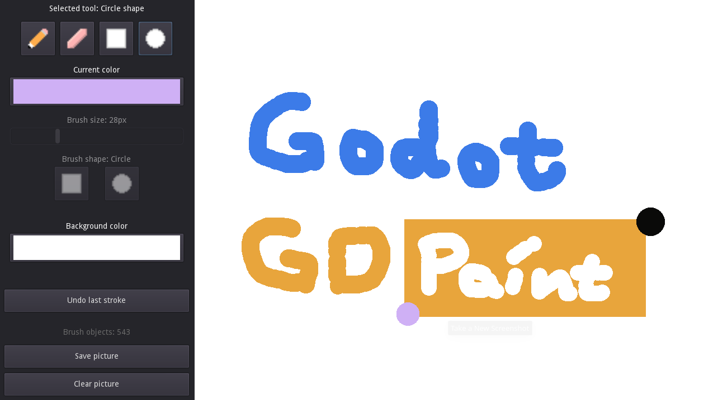

walker-gui-gd-paint · recovered GDD 0.1.0 · 2026-09-27 · Zelda, silent · gate — unsigned at time of writing
A paint program that remembers commands, not pixels.
Godot's upstream gui/gd_paint, title changed. Pencil, eraser, rectangle, circle, one-level undo, clear, save.
OBSERVED in code PROPOSED not in code / not exercised MISSING intent nobody wrote down
A tech demo (a small tool), not a game. No gate signed; no pixel has been checked by a person.
What exists · §0
The upstream screenshot

OBSERVED godot/screenshots/gdpaint.png (1275×717) — upstream's image, retained. Not a Walker capture.
Vision · §1
Every stroke is a list of dictionaries
Brushes stored in brush_data_list, all redrawn in _draw(). OBSERVED paint_control.gd:22, 191-223 Eraser paints background color: 'isn't really erasing'. OBSERVED :206-207 Why Walker keeps it, for whom. MISSING Q-01, Q-02
Loop · §3
Press, hold, release, maybe undo once
→ GDD §3, §5
Mechanics · §5
Three upstream quirks
Fast pencil strokes are separate dabs, not a line. INFERRED Circle radius uses only the vertical half-distance. OBSERVED :184 Changing background recolors every past eraser dab. INFERRED Upstream choices, not Walker bugs. Changing them is Q-05.
Features · §11
Eight features, none tagged
Evidence · §16
19 headless checks passReal mouse events: strokes, rectangle 50×40, circle, eraser, undo, clear, undo-after-clear, outside-start ignored, slider 32→38, box/circle brush.
paint-settings-label-20260927.log · command lists only. Pixels, pickers, save: unverified.
Risks · §14
Top 3
R-02 Save opens a filesystem-wide dialog with hidden files, on camera.R-01 command-list passes read as 'drawing verified'.R-04 tool-atlas authorship not established.
Open questions · decisions.md
Nine questions, all open
Q-01 why in Walker · Q-02 who for · Q-03 upstream-faithful? Q-04 learning goal · Q-05 scope (undo depth, interpolation, eraser) Q-06 Save on film · Q-07 atlas authorship · Q-08 film plan · Q-09 visual QA PROPOSED H-01 pixel check per tool · H-02 save three formats to scratch · H-03 fast diagonal stroke
Zelda
First fix: answer Q-01
A tool, not a game. Its quirks are upstream's and they are honest about it in the comments. Don't fix them silently, and don't film Save until Q-06 is answered.